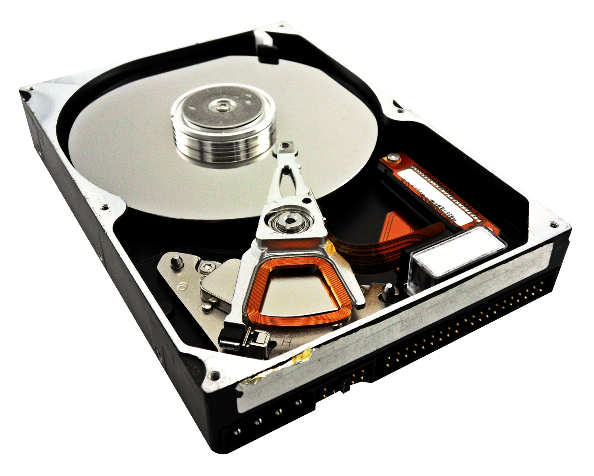

Деление дисков на разделы

Диск - это запоминающее устройство для хранения ваших файлов и данных в течение длительного времени, физический или виртуальный участок памяти, содержащий разделы или неформатированное пространство.
Раздел - это область диска, которая выглядит для системы как отдельный диск (например, в проводнике). Раздел может быть основным или дополнительным
Разделы можно создавать для чего угодно, но на домашних компьютерах реальная необходимость возникает в двух случаях:
- Разбивка жесткого диска на разделы не принесет выигрыша в скорости его работы, но она сильно упростит работу с накопителем и его обслуживание. Таким образом можно будет легко сможете восстановить работу операционной системы без ее длительной установки и настройки с нуля, можно использовать на одном компьютере несколько ОС, а создание бэкапов и обслуживание HDD займут куда меньше времени.
Исключением может стать, разве что, накопитель, который используется исключительно для бэкапов важной информации. Например, сделанных во время фотосессии снимков, рабочих файлов и других данных. Но для этих целей больше подойдет не внутренний жесткий диск, а внешний накопитель. Поэтому и случаются такие ситуации достаточно редко. Во всех остальных случаях разбивка диска на разделы вполне оправданна. Это, как минимум, удобнее.
Рекомендации
- Дополнительное загружаемое программное обеспечение не требуется для разбиения жесткого диска, оно ничем не отличается от встроенной утилиты. Кроме того, из года в год Microsoft не изобретает ничего нового с точки зрения управления дисками, поэтому пользователь, который администрировал компьютеры с предыдущими версиями Windows, будет чрезвычайно знаком.